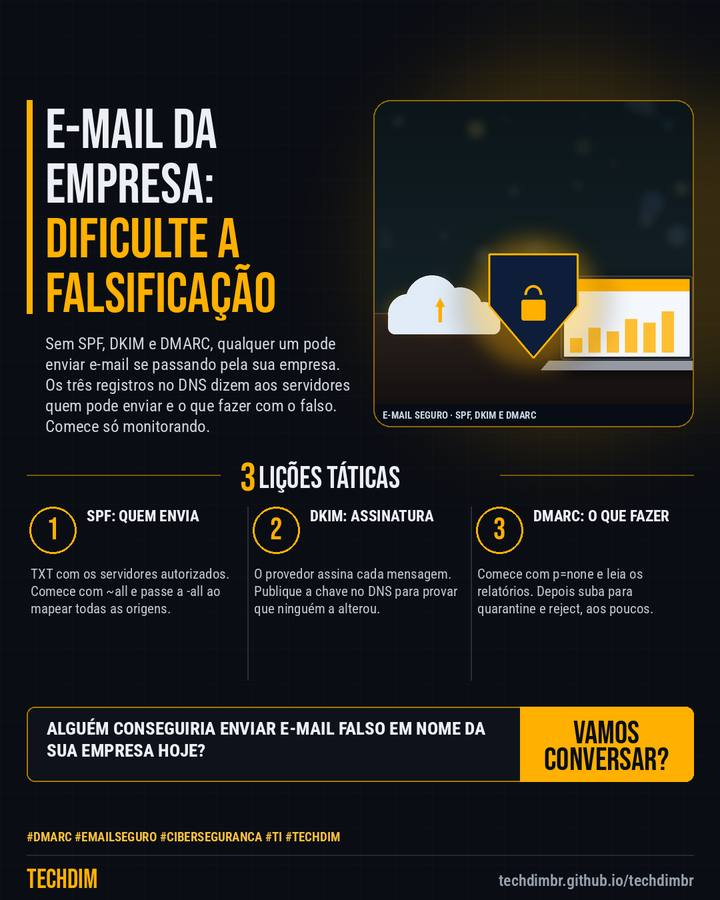

Dica prática
SPF, DKIM e DMARC: dificulte a falsificação do e-mail da sua empresa em 5 passos
Sem SPF, DKIM e DMARC, qualquer um pode enviar e-mail se passando pela sua empresa. Os três registros no DNS dizem aos servidores quem pode enviar e o que fazer com o falso. Comece só monitorando.

Resumo da dica
- 1) Liste tudo que envia e-mail pelo seu domínio. 2) Publique o SPF em TXT no DNS (v=spf1 include:seu-provedor ~all) e troque por -all quando mapear todas as origens
- 3) Ative o DKIM no provedor e publique a chave no DNS. Aguarde cerca de 48 h. 4) Crie o TXT _dmarc.seudominio com v=DMARC1; p=none; rua=mailto:caixa@seudominio
- 5) Leia os relatórios (rua) e, quando todo o e-mail legítimo passar, suba o DMARC para p=quarantine e depois p=reject, aplicando aos poucos com pct
O e-mail do seu domínio já tem SPF, DKIM e DMARC? Comece pelo DMARC em p=none e leia os relatórios.
Por que vale a pena
Passo a passo baseado nas documentações da Microsoft e do Google Workspace para dificultar a falsificação do e-mail do domínio da empresa, em ordem segura de implantação.
Passo a passo
- SPF: quem envia. TXT com os servidores autorizados. Comece com ~all e passe a -all ao mapear todas as origens.
- DKIM: assinatura. O provedor assina cada mensagem. Publique a chave no DNS para provar que ninguém a alterou.
- DMARC: o que fazer. Comece com p=none e leia os relatórios. Depois suba para quarantine e reject, aos poucos.
Fontes consultadas
Mais do Radar de hoje
Leia também
Este texto resume as fontes citadas na data de publicação. Confira sempre o aviso oficial do fabricante antes de agir em produção.